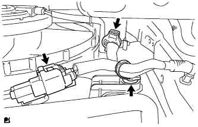
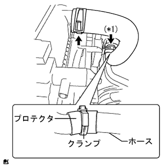
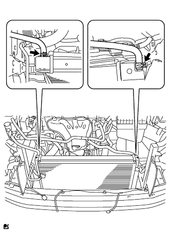
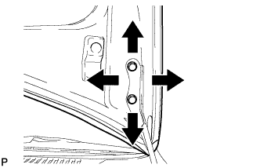
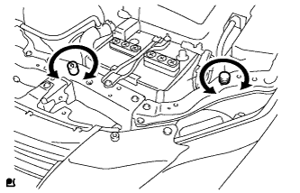
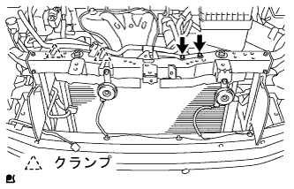

Radiator Assembly (2AZ-FE) Installation |
| 1. Fan Shroud Installation |
 |
Install the fan shroud to the radiator assembly with 2 bolts.
| 2. Install Radiator Assembly |
 |
Install the 2 radiator support lower cushions.
Install the radiator assembly together with the fan shroud to the vehicle.
Install the cooler condenser assembly to the fan shroud.
| 3. Connect Thermistor Assembly |
 |
Install the thermistor assembly with the clip.
| 4. Connect Wire Harness |
 |
Connect the 2 cooling fan motor connectors and the wire harness clamp.
| 5. Connect Radiator Inlet Hose |
 |
Connect the radiator inlet hose with 2 clamps.
| 6. Connect Radiator Outlet Hose |
 |
Connect the radiator outlet hose with the clamp.
| 7. Connect Water Bypass Hose |
 |
Connect the 2 water bypass hoses with 2 clamps.
| 8. Install Fan Shroud NO.2 |
 |
Install fan shroud No.2 to the radiator assembly with the 2 bolts.
Using the clamp, install the water bypass hose No.3 to the fan shroud No.2.
Install the 2 radiator support cushions to the fan shroud No.2.
| 9. Install Radiator Support Assembly |
 |
Install the radiator support assembly with the 4 bolts.
 |
Connect the 2 horn assembly connectors.
| 10. Install Hood Lock Assembly |
 |
Install the hood lock assembly with the 3 bolts.
 |
Attach the hood lock control cable assembly to the 2 clamps.
| 11. Inspect Hood Sub-assembly |
Check that each clearance dimension is within the reference value.

| A | 6.2±1.5 mm | D | 3.8±1.5 mm |
| B | 4.3±1.5 mm | E | 0±1.0 mm |
| C | 0.1±1.5 mm | ||
| 12. Adjust Hood Sub-assembly |
Adjustment in forward/rearward direction of hood and left/right direction at rear end
 |
Loosen the bolts of the bonnet (hood) hinge assembly and adjust.
Vertical adjustment of left and right front end of hood
 |
Turn the 2 cushions on each of the left and right sides to adjust the height.
Vertical and lateral adjustment of front end of hood
 |
Loosen the 3 bolts of the bonnet (hood) lock assembly and adjust.
| 13. Connect Water Bypass Hose |
 |
Install the water bypass hose to the radiator support assembly with the 2 bolts and 2 clamps.
| 14. Install Battery |
Install the battery to the vehicle.
Install the insulator.
 |
Install the battery clamp with the bolt and nut.
Connect the battery positive terminal with the nut. (*1)
| 15. Install Front Bumper Assembly |
Connect the connectors.
 |
Engage the 8 claws (4 each on LH/RH).
 |
Install the front bumper assembly with the 5 clips, 2 bolts and 6 screws.
 |
Install the pin hold clip.
| 16. Install Radiator Grille Protector |
 |
Install the 2 radiator grille protectors.
| 17. Install Radiator Upper Air Deflector |
Install the radiator upper air deflector with the 8 clips.
| 18. Connect Battery Negative Terminal |
| 19. Add Coolant (Toyota Genuine Super Long Life Coolant) |
Close the radiator drain cock plug.
Close the cylinder block drain cock plug.
 |
Fill coolant of the specified concentration up to the B line of the radiator reserve tank.
After installing the reservoir tank cap, warm up the engine until the thermostat opens. (A)
After warm-up, repeat the cycle of 3000rpm engine speed for 5 seconds ←→ idling for 45 seconds 8 times or more (7 minutes or more). (B)
Stop the engine and wait until the coolant cools down, and if the level is below LOW, add coolant of the specified concentration through the filler again and adjust it to between FULL and LOW. (C)
Repeat steps (A) to (C) until the coolant level in the radiator reservoir tank stops dropping.
When the level stops dropping, add coolant of the specified concentration through the filler again to adjust the coolant level in the radiator reservoir tank to between FULL and LOW.
| 20. Inspect for Coolant (Toyota Genuine Super Long Life Coolant) Leaks |
 |
Fill the radiator with coolant and install a radiator cap tester.
Warm up the engine.
118kPa{1.2kgf/cm2Pump it to } and check that the pressure does not drop.
| 21. Install Engine Under Cover NO.1 |
Install the engine under cover No.1 with the 6 bolts and 7 clips.
| 22. Setting Procedure When Disconnecting/Reconnecting Battery Terminal |
Reference